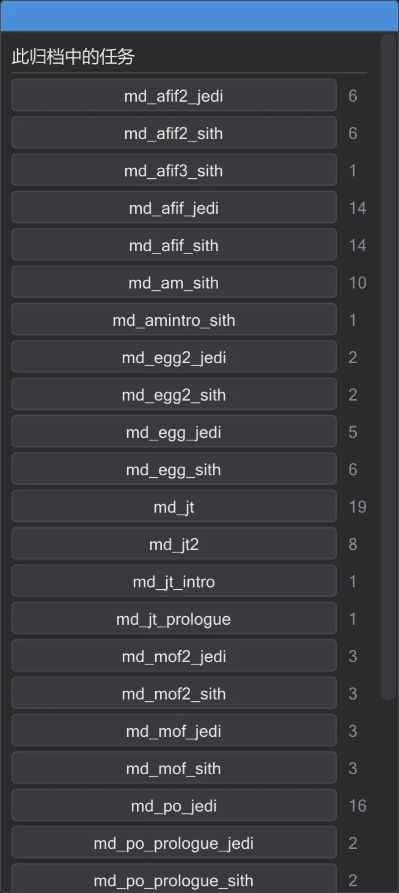
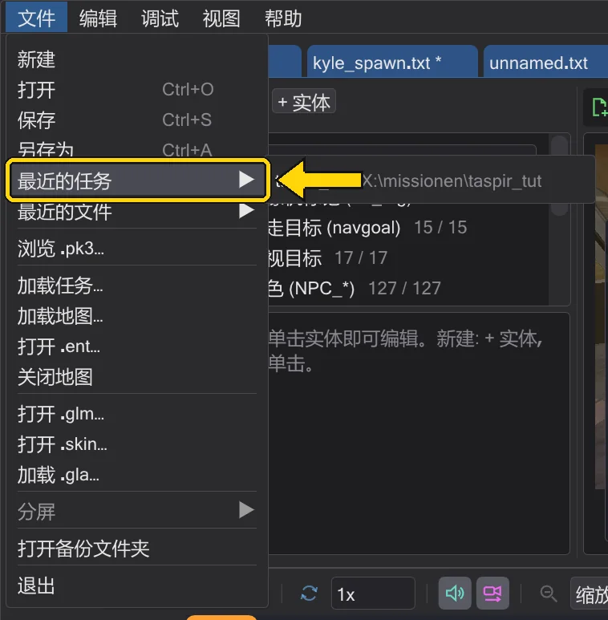

任务
任务
任务就是一张地图及其实体和全部脚本。可以完整打开任务、创建自己的任务,并打包成游戏可加载的 .pk3。
打开任务#
加载任务…(文件 菜单或地图工具栏)选择一个 .pk3 并列出其中的任务——带脚本的地图。选择一个,一切就绪:地图、包含任务角色的 .ent,以及任务的每个脚本各占一个标签页;第一个脚本(通常是开场)显示在最前。所有标签页共享地图和摄像机。

最近的任务#
文件 → 最近的任务 和起始页面列出最近打开的任务——无论来自压缩包还是任务文件夹。单击即可重新打开整个项目:地图、实体和所有脚本。文件已不存在的条目会从列表中移除。

新建任务#
新建任务 可在任意地图上开始一个任务。选择地图,为任务命名(字母、数字和 _;游戏以 maps/<名称>.bsp 加载,即 devmap <名称>),并指定脚本文件夹。BehavEd-Remake 会创建玩家出生点、脚本启动器、开场脚本,以及位于 文档\behaved\missions 下的任务文件夹。玩家出生时开场脚本开始运行。

从未打包的任务保存在其文件夹中;重启后可用 打开任务文件夹 继续。
保存任务#
保存任务 会显示将放入压缩包的内容——每个文件及其大小——并先检查任务:实体使用了但不存在的脚本、无法编译的脚本、缺少玩家出生点、指向不存在目标的引用、缺少 ENDMARKER 的 .str。错误(红色)必须修正,警告(橙色)可以保留。保存 保存所有脚本、写入 .ent、编译脚本、加入你自己的 ROFF 文件,并把 .pk3 打包到游戏文件夹。

压缩包会写到其他模组压缩包旁边(Movie Duels 文件夹中的
zz_<名称>.pk3,以便优先于旧文件)。启动游戏并在控制台输入 devmap <名称> 即可游玩。